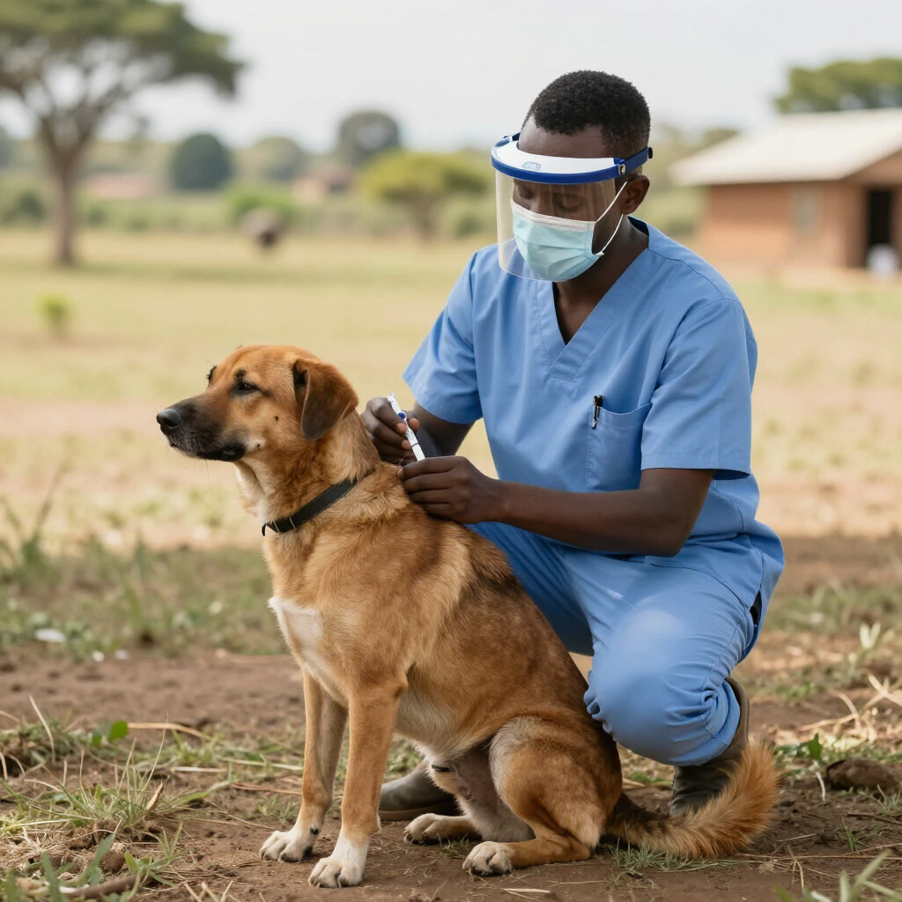
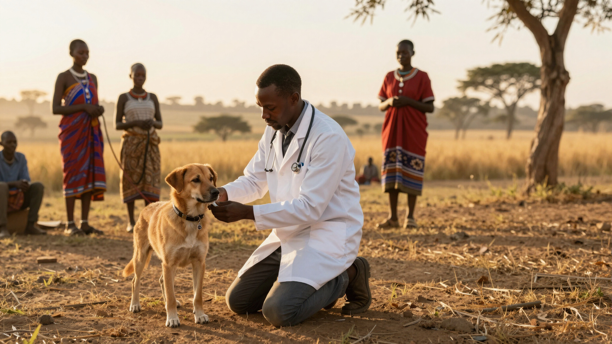
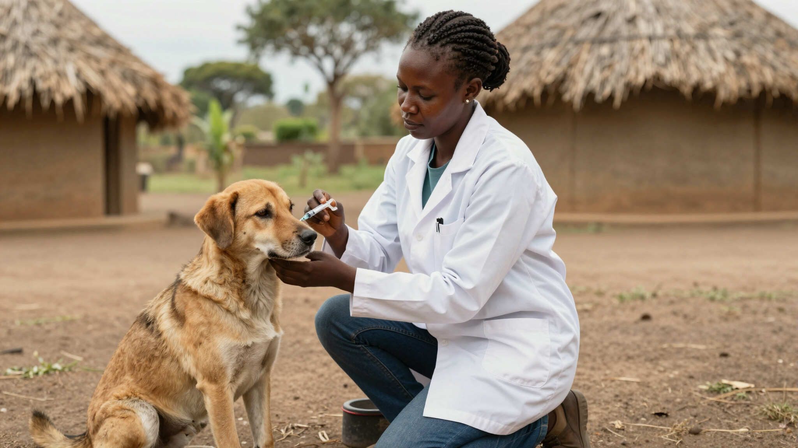
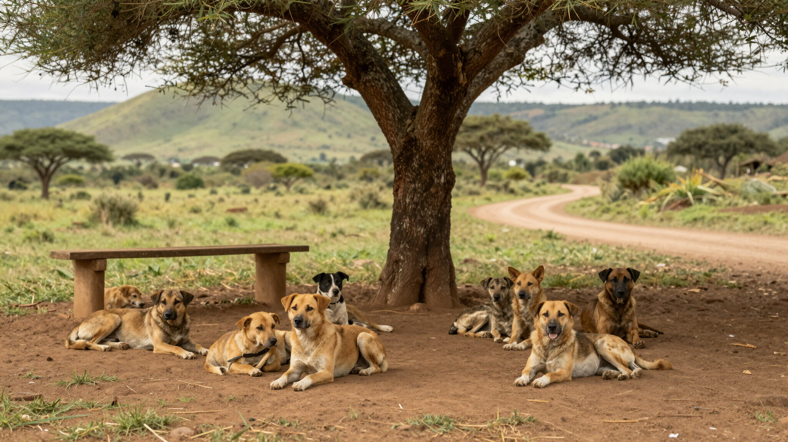
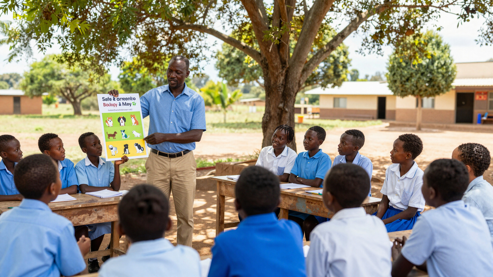
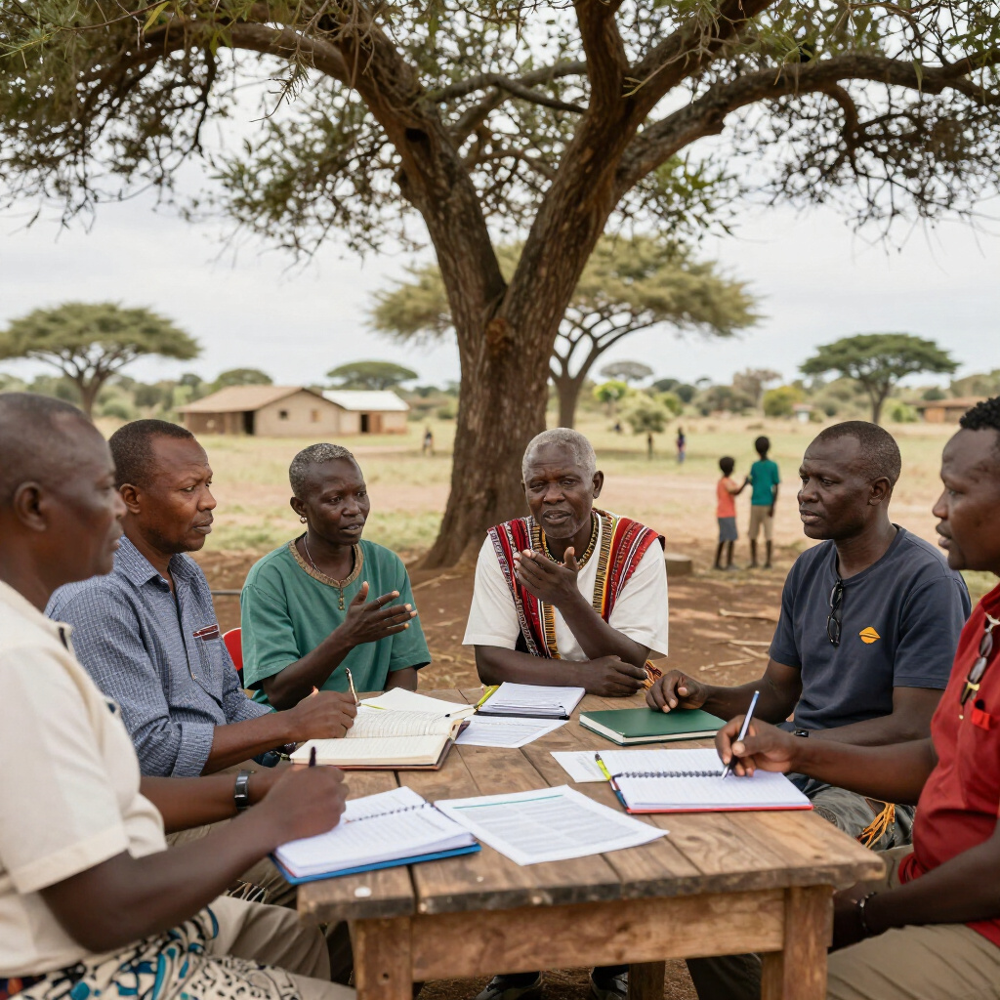
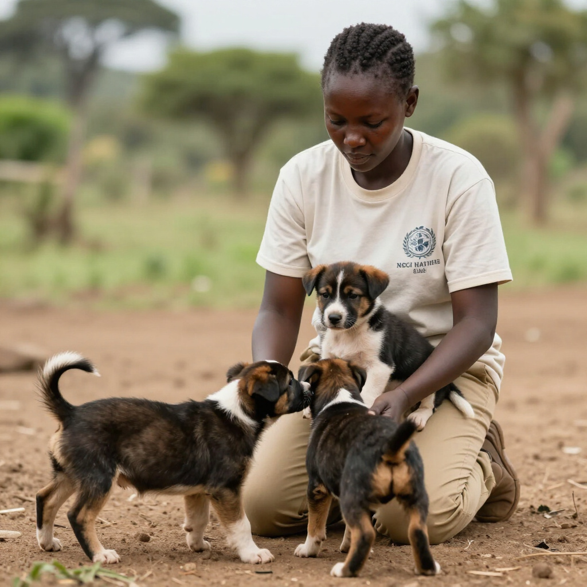

MARCH 12, 2026
Rabies Vaccination Progress in Nairobi Districts
Over 500 dogs reached in the latest door-to-door campaign ensuring community safety.

Together, we can end dog-mediated human rabies in Kenya through evidence-based vaccination, humane dog population management, strategic partnerships, and empowered communities.

Driving systemic mass vaccination projects to provide life-saving protection for dogs and vulnerable communities across Kenya.

Implementing humane and sustainable dog population management through sterilization and responsible pet ownership education.

Empowering children and communities through knowledge on animal behavior, safety protocols, and essential vaccination advocacy.

Over 500 dogs reached in the latest door-to-door campaign ensuring community safety.

Engaging local leaders to implement sustainable and compassionate management for stray dogs.

Training 20 new volunteers to expand our reach in protecting vulnerable rural communities.